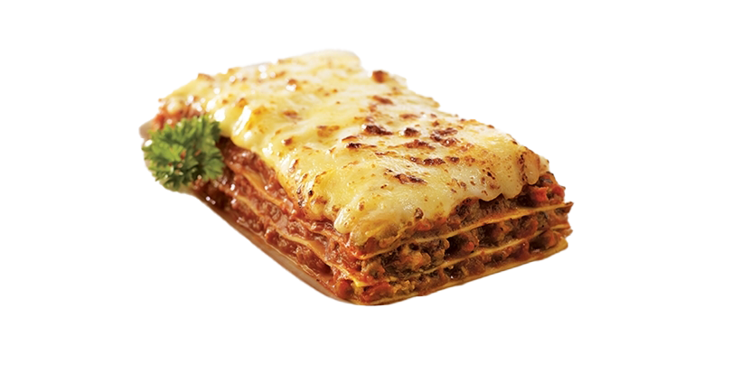

Lasagna inspired by Garfield

Description
Lasagna is a popular Italian comfort food. Sheets of pasta suffed with bolognese and cheese.
there are many regional variations of the dish, with the most famous hailing from Bologna.
Ingredients
- 10 ounce package lasagna noodles, uncooked
- 1/2 lb ground beef
- 1/2 lb ground pork
- 1 onion, diced
- 1 clove garlic, minced
- 14 ounce can stewed tomatoes
- 12 ounces tomato paste
- 2 tsp of Italian seasoning
- 3 cups ricotta cheese
- 1/2 cup grated Parmesan cheese
- 2 eggs, beaten
- 2 tablespooons dried parsely
- salt and pepper to taste
- 16 ounces shredded mozarella, divided
Steps
- Cook noodles according to package directions; drain.
- Meanwhile, in a skillet over medium heat, brown beef, sausage and onion; drain.
- Add garlic, undrained tomatoes, tomato paste and Italian seasoning; simmer for about 10 minutes.
- In a large bowl, blend together ricotta and Parmesan cheeses, eggs and seasonings.
- Spread 1/2 cup of beef mixture in a lightly greased deep 13"x9" baking pan.
- Layer as follows: 1/3 each of noodles, cheese mixture, beef mixture and mozzarella cheese.
- Repeat layers, ending with mozzarella. Cover with aluminum foil.
- Bake at 350 degrees for 45 minutes to one hour, until hot and bubbly.
- Let stand for 10 minutes before slicing. Serves 6 to 8.